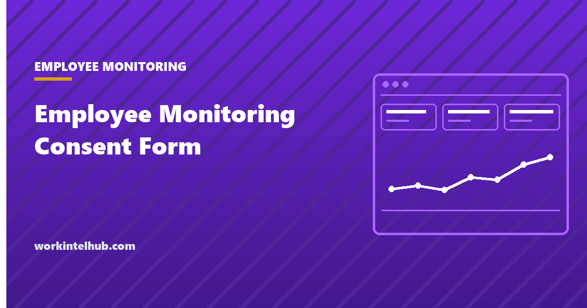

Employee Monitoring Consent Form

Below is a form you can copy. Before you do, one distinction is worth two minutes, because it changes what the document is for and how much weight it carries.
Most of what gets called an employee monitoring consent form is really an acknowledgement: a record that the employee was told, before monitoring began, what would be collected. That is what Delaware and New York require, and it is a different thing from consent freely given. Getting the word right protects you more than the signature does.
Why consent is usually the wrong word
Consent, in the sense privacy law means it, has to be freely given and freely refusable. An employee asked to sign a monitoring form on their first day cannot really refuse, and everyone in the room knows it. Regulators know it too, which is why employment relationships are generally a weak place to rest a case on consent.
The state statutes reflect this. None of the three requires consent. Connecticut General Statutes section 31-48d requires prior written notice and a conspicuously posted notice. New York Civil Rights Law section 52-c requires prior written notice upon hiring, acknowledged by the employee, plus a posting. 19 Delaware Code section 705 requires either a daily electronic notice or a one time notice the employee acknowledges. The obligation is to tell, and in two of the three to prove you told.
So the practical goal of this form is not permission. It is evidence, on a date, that the person knew. Write it that way and it does its job. Call it consent and you invite the question of whether the consent was real.
What the form has to contain
Five things. A form missing any of them is a signature without a record of what was understood.
- What is collected, in categories a non-technical reader recognises.
- What is not collected. This is what makes the form readable rather than ominous.
- The date the policy it refers to was issued, so it is clear which version was signed.
- How to ask questions, and confirmation that asking carries no consequence.
- Signature and date. Electronic is fine in both states that require acknowledgement.
Attach the policy itself rather than summarising it. A signature against a summary proves the person read a summary. Our employee monitoring policy template has the full document.
The acknowledgement form
Copy from here. Fill in the marked parts and attach the policy.
[Company] — Notice of Electronic Monitoring
This notice is given before monitoring begins. It describes what is recorded on company owned devices and company accounts. The full Employee Monitoring Policy, dated [date], is attached and forms part of this notice.
What is recorded. [list each category, for example: applications and websites used, active and idle time, periodic screenshots]
What is not recorded. The content of personal email or personal messaging accounts, camera and microphone, personal devices, and activity outside your working hours.
Who can see it. [named roles, not “management”]. You may request your own record at any time by contacting [email address].
How long it is kept. [number of days], after which it is deleted.
Questions. Contact [email address]. Raising a question or a concern about this notice has no effect on your employment.
I acknowledge that I have received and read this notice and the attached Employee Monitoring Policy dated [date].
Employee name: [ ]
Signature: [ ] Date: [ ]
The Delaware daily alternative
Delaware gives employers a choice that the other two do not. Rather than collecting an acknowledgement once, you may display an electronic notice at least once on each day the employee accesses employer provided email or internet.
Most systems end up implementing the banner, because it requires no record keeping and no chasing of signatures. If you take that route, the banner has to appear every day, not once at setup.
Notice: use of [Company] email and internet services may be monitored or intercepted. By continuing, you acknowledge this notice.
If you would rather collect one signature, the statute requires the notice to be in writing or an electronic record and to be acknowledged by the employee in writing or electronically. An unsigned handbook does not satisfy it.
A shorter version for offer letters
The full notice belongs with the policy. What goes in an offer letter or a handbook signature page is shorter, and its job is only to point at the full document and record the date.
I have received the [Company] Employee Monitoring Policy dated [date]. I understand that activity on company owned devices and company accounts is recorded as described in that policy, that the content of my personal accounts and my personal devices is not, and that I can request my own record or ask questions at [email address] at any time.
Name: [ ] Signature: [ ] Date: [ ]
Note what the short version still names: what is not collected, and where to ask. Drop those two and it becomes a waiver rather than a notice, which is the form people sign without reading and object to later.
What to keep, and for how long
The signature is the least useful part of the record. Four things make it provable later.
- The version of the policy that was attached, stored as a file rather than a link to a page that has since changed.
- The date the notice was given, which needs to precede the date monitoring began on that person's device.
- The acknowledgement itself, with a timestamp if it was electronic.
- Evidence the employee could retrieve their copy, which is usually just the fact that it lives somewhere they can open.
Keep these for the duration of employment plus your standard retention period for employment records. That is longer than you keep the monitoring data itself, and deliberately so: the acknowledgement is the thing you may need after the data is gone.
A live link is the common failure. If the acknowledgement points at company.com/monitoring-policy and that page has been edited twice since, you have a signature against a document nobody can now produce.
The same conclusion outside the US
If any of your staff are in the UK or EU, the point about consent stops being stylistic and becomes a legal one.
The European Data Protection Board'"'"'s predecessor, the Article 29 Working Party, addressed this directly in Opinion 2/2017 on data processing at work, adopted in June 2017. Its conclusion was that employees are almost never in a position to freely give, refuse or revoke consent, given the dependence that arises from the employer and employee relationship. GDPR Recital 43 makes the same point more generally: consent should not be a valid ground where there is a clear imbalance between the individual and the organisation processing their data.
The practical effect is that employers relying on consent for monitoring are usually relying on the weakest available basis, and one an employee can withdraw. Legitimate interests, with a documented balancing assessment, is the ordinary route, and it requires transparency rather than permission. Which lands in the same place as the US statutes: tell people, in writing, before you start.
What each of the three states asks for
The differences matter operationally, because they decide whether you need a signature on file at all.
| State | Notice required | Signature required | Timing |
|---|---|---|---|
| Connecticut | Prior written notice, plus a notice posted conspicuously | No | Before monitoring begins |
| Delaware | Written or electronic notice, or a daily electronic banner | Yes, unless you use the daily banner | Before or on each day of access |
| New York | Written or electronic notice upon hiring, plus a posting | Yes, written or electronic | Upon hiring |
New York’s trigger is hiring, which means the form belongs in the onboarding pack rather than in a later rollout. If you switch monitoring on for existing staff in New York you are outside what the statute contemplates, and that is worth raising with counsel rather than working around. Our guide to monitoring laws by state covers the wiretap and consent rules that sit underneath these three.
Everywhere else there is no notice statute of this kind, and the acknowledgement is still worth collecting. It converts a disputed conversation into a dated document, which is most of what you want it for.
Contractors, personal devices and existing staff
Contractors. The three statutes apply to employees. A contractor working on your hardware is covered by the terms of their contract instead, so the monitoring clause belongs there rather than in an employee acknowledgement. A contractor on their own machine is a different question, and the usual answer is that you do not monitor it.
Personal devices. An acknowledgement does not turn a personal laptop into company property. If you allow personal devices, the form has to name exactly what the software can see on that machine and what it cannot, and what happens to it when the person leaves. Our page on what an employer can see on a laptop covers the technical limits.
Existing staff. Rolling monitoring out to people already employed is where prior notice takes real effort, because there is no onboarding moment to attach it to. Give the notice, leave a gap before anything is switched on, and hold a session where questions get answered. Compressed into a same day email, it is the version people remember badly.
Where these forms fail
Signed after monitoring started. All three statutes require prior notice. A form dated after the agent was installed documents the gap rather than closing it.
Buried in the handbook. A clause on page 40 that nobody signed separately is not an acknowledgement in Delaware or New York.
Written as blanket consent. "I consent to all monitoring the company may conduct" is both unenforceable-looking and alarming. Specific beats broad, and it reads better.
No copy given to the employee. If the only copy is in the HR file, the person cannot check what they agreed to, which is the first thing they will want when something goes wrong.
Never refreshed. If what you collect changes, the old acknowledgement covers the old list. Re-issue when the answer to "what is recorded" changes.
Attached to a live link. A signature against a URL that has been edited since proves nothing about what was on the page that day. Attach the file.
Presented as a condition of employment when it is not one. The statutes ask you to notify. Framing the form as something that must be signed to keep a job is unnecessary, and it is the fastest way to turn a routine document into a grievance.
What to expect when you hand it out
People will read the "what is not recorded" section first, and their reaction will be specific rather than general. Pew Research Center found in 2023 that 51% of US adults oppose employers recording what people do on their work computers, 56% oppose tracking when office workers are at their desks, and 61% oppose tracking workers' movements. Opposition is strongest among the youngest workers: 64% of adults aged 18 to 29 opposed tracking computer activity, against 38% of those 65 and over.
That is worth knowing before the meeting rather than during it. The objection you get will be about one capability, and the answer that works is naming what you do not collect. Our ethical monitoring playbook covers the tests a proposal should pass before it reaches this stage.
Key takeaways
- What is usually called a consent form is an acknowledgement: proof the employee was told before monitoring began.
- None of the three state statutes requires consent. They require notice, and two require the employee to acknowledge it.
- Consent is weak ground in employment because it cannot be freely refused, and that is visible to everyone involved.
- The form needs what is collected, what is not, the policy version and date, who to ask, and a signature.
- Delaware allows a daily electronic banner instead of a signature, and most systems choose it because it needs no record keeping.
- Prior notice means prior. A form signed after installation records the gap rather than closing it.
- Re-issue the acknowledgement whenever the answer to 'what is recorded' changes.
Frequently asked questions
Do employees have to sign a monitoring consent form?
In Delaware and New York the employee must acknowledge the notice, in writing or electronically. Connecticut requires prior written notice and a posted notice but no signature. No state requires consent in the privacy law sense, and asking for it is usually weaker than asking for an acknowledgement.
What is the difference between consent and acknowledgement?
Consent means agreeing to something you could have refused. Acknowledgement means confirming you were told. Employment makes real consent hard to establish, because refusing is not a free choice, so the statutes ask employers to notify and to prove they notified rather than to obtain permission.
Is a monitoring clause in the employee handbook enough?
Not in Delaware or New York, both of which require the employee to acknowledge the notice. A clause nobody signed separately is not an acknowledgement. Everywhere else it is still worth collecting a signature, because it converts a disputed conversation into a dated document.
Can the acknowledgement be electronic?
Yes. Delaware expressly permits notice in an electronic record acknowledged electronically, and New York permits written or electronic form. A click-through with a stored timestamp and the policy version is sufficient, provided the employee can retrieve their own copy afterwards.
What if an employee refuses to sign?
The notice duty is on the employer to give notice, not to obtain agreement, so a refusal does not stop you meeting the statute. Record that the notice was given and that the employee declined to sign, with a date and a witness. Then find out why, because a refusal usually points at a specific capability rather than at the document.
Does the form need to list every category collected?
It needs to be specific enough that a reader knows what is happening. A vague list reads as a broader one, so naming the categories tends to reduce anxiety rather than increase it. It also protects you: an acknowledgement against a specific list is evidence of what was understood.
Is consent a valid legal basis for monitoring under GDPR?
Rarely. The Article 29 Working Party concluded in Opinion 2/2017 that employees are almost never in a position to freely give, refuse or revoke consent because of the dependence in the employment relationship, and GDPR Recital 43 says consent should not be a valid ground where there is a clear imbalance. Employers normally rely on legitimate interests with a documented balancing assessment, which requires transparency rather than permission.
Do contractors need to sign a monitoring form?
The Connecticut, Delaware and New York statutes apply to employees, so a contractor is covered by their contract instead. Put the monitoring terms in the contract rather than asking a non-employee to sign an employee acknowledgement, and if the contractor works on their own equipment, the usual answer is that you do not monitor it at all.
How often should the acknowledgement be refreshed?
Whenever the answer to what is recorded changes, and on a set cycle otherwise. An acknowledgement signed against last year's list does not cover a capability you added since, and adding capabilities quietly is what turns a policy question into a trust problem.